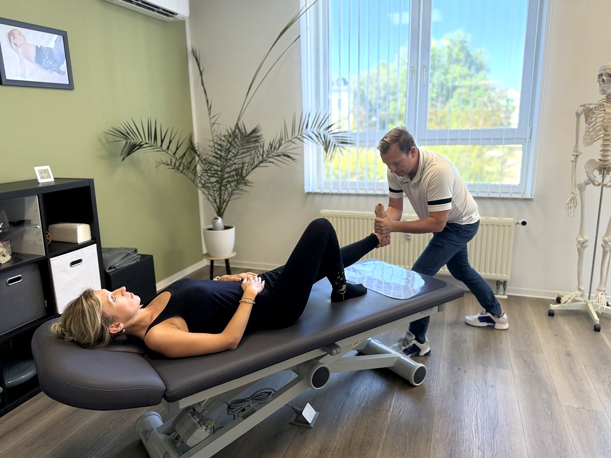
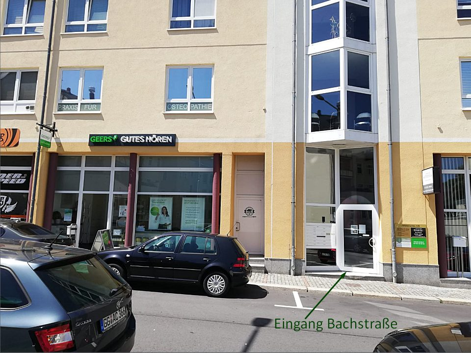

Behandlung beim Heilpraktiker statt Wartezeit auf einen Termin. Kurze Anfahrt aus dem Raum Zwickau, Parkplätze direkt vor der Tür.
Wer im Raum Zwickau nach chiropraktischer Behandlung sucht, landet schnell bei orthopädischen Praxen. Dort ist Chirotherapie eine ärztliche Zusatzleistung, die zwischen Sprechstunde und Terminkalender eingeplant werden muss. Bei einer akuten Blockade ist das oft die falsche Zeitachse.
Ich arbeite als Heilpraktiker. Das heißt: kein Überweisungsweg, keine Quartalslogik, und ich kann Termine für akute Fälle freihalten. Dafür ist die Behandlung eine Privatleistung, die Sie selbst tragen oder bei einer Zusatzversicherung einreichen. Diesen Handel sollten Sie kennen, bevor Sie anfahren.
Ein zweiter Punkt, der im Raum Zwickau selten zusammenkommt: Ich biete Chiropraktik und Osteopathie in derselben Praxis an. Wenn sich beim ersten Termin zeigt, dass Impulstechniken nicht das Richtige sind, wechseln wir den Ansatz, statt Sie weiterzuschicken.
Ein großer Teil der Anfragen aus dem Umland dreht sich um zwei Gruppen: akute Blockaden und Beschwerden aus Dauerbelastung.
Der klassische Fall: eine ungünstige Bewegung, danach geht der Kopf nicht mehr zur Seite oder das Aufrichten aus dem Sitzen zieht. Hier ist die Chance am größten, mit wenigen Terminen etwas zu bewegen.
Schreibtisch, Schichtarbeit, Handwerk, einseitiger Sport. Beschwerden, die über Monate entstanden sind, brauchen in der Regel mehr als einen Termin, und die Zahl sage ich Ihnen nach dem Befund, nicht vorher.
Kopfschmerzen, die im Nacken beginnen, Schwindel oder ein Ziehen in Schulter und Arm. Als zertifizierter HWS- und Atlas-Therapeut ist das ein Schwerpunkt bei mir.
Chiropraktik ersetzt keine ärztliche Abklärung. Bei starken oder plötzlich auftretenden Beschwerden, Taubheitsgefühlen, Lähmungserscheinungen oder nach einem Unfall gehört immer zuerst eine ärztliche Untersuchung dazu. Ich sage Ihnen offen, wenn ich eine Behandlung nicht für angezeigt halte, auch wenn Sie dafür angereist sind.
Ausführlich steht das auf meiner Seite zur Chiropraktik, dort finden Sie auch den Ablauf und die Grenzen der Methode.
Gleiche Preise für alle, unabhängig davon, woher Sie anreisen.
| Leistung | Dauer | Preis |
|---|---|---|
| Erstbehandlung Anamnese, Befund und Behandlung | 40–50 Min | 140 € |
| Folgebehandlung | 20–25 Min | 90 € |
| Akutbehandlung bei plötzlich auftretenden Beschwerden | 40–50 Min | 140 € |
Abrechnung nach der Gebührenordnung für Heilpraktiker (GebüH). Für gesetzlich Versicherte ist die Behandlung beim Heilpraktiker keine Kassenleistung. Private Versicherer und Heilpraktiker-Zusatzversicherungen erstatten je nach Tarif ganz oder anteilig. Details dazu auf der Seite zur Chiropraktik.
Praxis für Osteopathie & Chiropraktik, C. Uhlmann
Johannisplatz 4/2, 09212 Limbach-Oberfrohna
Eingang Bachstraße
Mit dem Auto: Von Zwickau sind es rund 25 Kilometer, je nach Verkehrslage etwa 30 Minuten. Das ist der empfohlene Weg.
Parken: Parkplätze direkt vor der Tür, barrierefreie Parkplätze vorhanden.
Mit Bus und Bahn: Ab Zwickau Hauptbahnhof bis Chemnitz Hauptbahnhof rund 45 Minuten, dann ab Chemnitz Zentralhaltestelle mit der Buslinie 526 bis zur Haltestelle Gaswerk, Limbach-Oberfrohna, noch einmal rund 20 Minuten. Mit dem Umstieg sollten Sie gut 70 bis 75 Minuten einplanen. Wenn Sie die Wahl haben, kommen Sie mit dem Auto deutlich schneller an.
Zugang: Am Eingang liegt eine kleine Stufe, danach führt ein Fahrstuhl in die Praxis. WC in der Praxis, Wickel- und Stillmöglichkeit vorhanden. Wenn Sie auf einen stufenlosen Zugang angewiesen sind, rufen Sie bitte kurz an, dann richte ich es ein.

Behandlung nur nach Vereinbarung. Rufen Sie mich an, wir finden einen Termin, der zu Ihnen passt.